300 вопросов о цигун. Секреты китайской медицины. Содержание
Цигун "десять кусков парчи" имеет 10 вариантов в положении стоя и 10 вариантов упражнений на кровати, что удобно для лежачих больных. Особенностями этой разновидности являются простота движений, их легкость, выполнение в одном ритме с медитацией, которую координируют с дыханием. Этими упражнениями легко овладеть. Они полезны для укрепления здоровья больных, страдающих некоторыми хроническими заболеваниями.
I. Варианты упражнении на кровати.
Лучше всего заниматься сидя на кровати с дощатым настилом, не опираясь на одеяло. Основные способы таковы.
"Энергичные повороты шеи" (рис. 52-54).
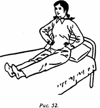
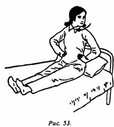
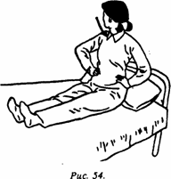
Обе ноги вытянуты в естественном положении сидя. Руки покоятся на пояснице; голова и верхняя часть корпуса выпрямлены, глаза смотрят прямо. Используя динамическую концентрацию, на счет "раз" голову поворачивают влево до упора; одновременно делают вдох. На счет "два" голову возвращают в исходное положение, одновременно делают выдох. На счет "три" голова поворачивается вправо до упора, при этом делается вдох. На счет "четыре" голова возвращается в исходное положение; одновременно делается выдох. Всего выполняется 2 подхода по 8 счетов каждый (считают про себя, а не вслух; если проводится групповое занятие, то можно считать вслух).
Важные моменты: двигаются только голова и шея, остальные части тела остаются неподвижными; при поворотах шеи следует координировать движения и дыхание.
"Вращать ладонями, раскрывать грудь" (рис. 55, 56).
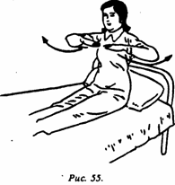
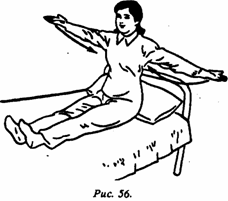
Выполняется на основе первого упражнения, оба плеча поднимаются вверх, руки сгибаются в локтях, ладони обращены друг к другу; ладони поворачиваются вниз; при мысленном счете "раз" плечами расправляют грудь, одновременно делается вдох. На счет "два" при развороте прямых ладоней наружу руки движутся вперед, грудь раскрывается, одновременно делается выдох. Выполняется 4 подхода по 8 счетов каждый.
"Поднимать обеими руками тысячу цзиней" (рис. 57, 58).
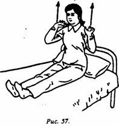
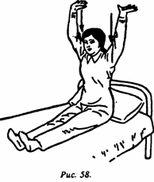
Выполняется на основе второго упражнения. Обе руки, согнутые в локтях, располагают по обеим сторонам груди. На мысленный счет "раз" обеими руками выполняют с усилием толкательное движение вверх, одновременно при запрокидывании головы вверх делают вдох. На счет "два" возвращаются в исходную позицию, при этом делают выдох. Выполняется 4 подхода по 8 счетов.
Важные моменты: необходимо одновременно поднимать вверх обе руки, поднимать вверх голову и делать вдох; необходимо совмещать опускание обеих рук вниз, возвращение головы в положение, когда глаза смотрят прямо вперед, и выдох.
"Вращать головой, разводить руками" (рис. 59-61).
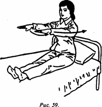
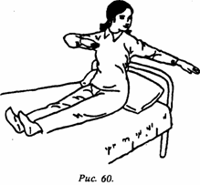
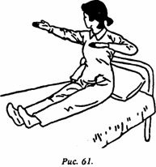
Находясь в стойке третьего упражнения, про себя считают "раз", при этом обе руки параллельно поднимают в положение перед грудью; глаза смотрят прямо; одновременно делается вдох. На счет "два" прямая ладонь левой руки поворачивается и горизонтально движется влево; вслед за этим голова поворачивается влево, глаза смотрят на левую ладонь; одновременно правая рука сгибается в локте и оказывается перед грудью, ладонь обращена вниз; правая рука с силой отводится вправо; одновременно делается выдох. На счет "три" возвращаются в исходную позицию (обе руки держат перед грудью параллельно земле, глаза смотрят вперед, одновременно делается вдох). На счет "четыре" перевернутая ладонь правой руки движется вправо; голова, следуя за ней, также поворачивается вправо; глаза все время смотрят на ладонь правой руки; левая рука согнута в локте, находится перед грудью ладонью вниз; ее с силой отводят назад и влево; одновременно делается выдох. Все упражнение выполняется в 4 подхода по 8 счетов.
Важные моменты: необходимо координировать движения головы, левой и правой рук с дыханием; при выполнении упражнения, подобного "стрельбе из лука", согнутые локти отводятся в крайние левую и правую позиции, грудь распрямляется с силой.
"Обхватить голову, сгибать поясницу" (рис. 62, 63).
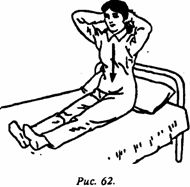
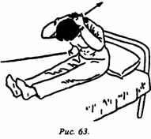
Выполняется на основе четвертого упражнения; пальцы рук переплетены, ладони смотрят вперед, большие пальцы направлены вниз. Руки заводят за голову, на счет "раз" (про себя) втягивают живот, выполняют сгибание поясницы вперед; одновременно делают вдох. На счет "два" распрямляют спину, голову возвращают в первоначальное положение; верхняя часть тела естественно выпрямлена; одновременно делается выдох. Все упражнение выполняется в 4 подхода на 8 счетов.
Важные моменты: во время сгибания и распрямления поясницы спина остается прямой; необходимо сочетать дыхание и движения.
"Прохождение груди и желудка" (рис. 65).
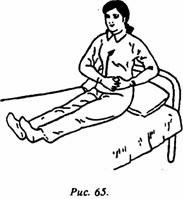
Выполняется на основе пятой стойки; руки сложены друг на друга, левая ладонь прижата к правой стороне груди, пальцы обращены вправо; мысленно делается счет "раз", ладони равномерно перемещаются влево, затем движутся влево вниз к желудку; одновременно делается вдох. На счет "два" ладони движутся с левой стороны внизу живота к правой, затем так же параллельно поднимаются в верхний правый сектор вплоть до возвращения в исходную позицию; одновременно делается выдох. Упражнение выполняется в 4 подхода по 8 счетов.
Важные моменты: перемещение левой ладони осуществляется по типу движения во время массажа, ровно и мягко, по часовой стрелке, т.е. от правой стороны груди- к левой стороне груди - к левой части низа живота - к правой части низа живота - к правой стороне груди.
"Вращать двумя руками жернов мельницы" (рис. 66, 67).
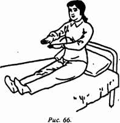
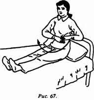
Выполняется на основе шестого упражнения; обе руки согнуты, находятся перед нижней частью живота, ладони обращены вниз; на мысленный счет "раз" обе руки одновременно вытягивают влево и вперед, при этом делается вдох. На счет "два" обе руки совершают движение, как при вращении жернова ручной мельницы. Направление движений: влево вперед - вправо вперед - вправо назад - влево назад; одновременно делается выдох. Выполняется упражнение в 4 подхода по 8 счетов.
Важные моменты: движения обеих рук при "вращении жернова" должны быть ровными и плавными.
"Массаж ребер и поясницы" (рис. 68, 69).
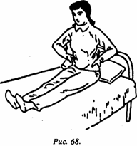
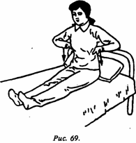
Выполняется на основе седьмого упражнения; обе руки кладут на поясницу таким образом, чтобы участок ладони между большим и указательным пальцами был обращен вниз; на мысленный счет "раз" обе руки, лежащие на талии, равномерно движутся вверх до уровня ребер (верхняя точка подъема); одновременно делается вдох. На счет "два" обе ладони равномерно движутся вниз, массируя, до линии талии (не заходя на ягодичную часть); одновременно делается выдох. Упражнение выполняется в 4 подхода по 8 счетов.
Важные моменты: скорость движения вверх и вниз должна быть равномерной, при массировании усилия должны быть плавными; при движении вверх прилагают усилие; при движении вниз ладони не должны просто сползать, - надо так же прикладывать соразмерные усилия для массажа.
"Повороты ног" (рис. 70, 71).
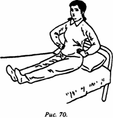
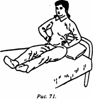
Выполняются на основе восьмого упражнения, руки лежат на пояснице; при счете "раз" ноги, вытянутые прямо, приняв за центр пятки, разворачивают наружу (движение "разворот наружу"); одновременно делается вдох. На счет "два" развернутые наружу ноги поворачиваются вовнутрь (движение возвратно); одновременно делается выдох. Упражнение выполняется в 4 подхода на 8 счетов.
Важные моменты: при вращении ног верхняя часть корпуса сохраняет выпрямленное неподвижное положение; колени должны делать развороты с максимально возможным размахом.
"Сгибание - разгибание ног в коленях" (рис. 72).
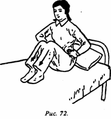
Выполняется на основе девятого упражнения; обе ладони лежат на пояснице или же прижаты к поверхности кровати; пальцы обращены вперед; на счет про себя "раз" вытянутые прямо ноги сгибаются в коленях; одновременно делается вдох. На счет "два" ноги распрямляются и возвращаются в исходную позицию; одновременно делается выдох. Выполняется 4 подхода по 8 счетов.
Важные моменты: определенным усилием достигать максимального сгибания ног в коленях; внутренние стороны коленей и ног при сгибании и разгибании должны быть плотно прижаты друг к другу.
II. Варианты стоя.
"Подпирать небо, стоять на земле" (рис. 73, 74).
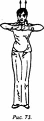
_____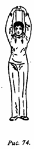
Ноги стоят в естественной позиции на ширине плеч, верхняя часть корпуса сохраняет прямое положение, глаза смотрят прямо, пальцы обеих рук переплетены, ладони покоятся в естественном положении перед верхней частью груди. Про себя произносится счет "раз", при этом обе ладони выворачиваются наружу, затем обращенные вверх ладони параллельно поднимаются из положения перед грудью до максимально возможного положения над макушкой; одновременно поднимается голова, делается вдох. На счет "два" сцепленные над головой руки опускаются вниз до нижней части живота, ладони выворачиваются наружу; когда ладони ложатся на низ живота, голова сохраняет прямое положение, одновременно делается выдох. Упражнение выполняется в 4 подхода по 8 счетов (необходимо считать про себя, а не вслух; если проводится групповое занятие, то команды можно подавать вслух).
Важные моменты: при поднятии рук вверх и опускании вниз, находясь в крайних позициях, руки должны быть перпендикулярны земле и при перемещении должны быть максимально приближены к груди и лицу; при поднятии рук в наивысшую позицию над головой необходимо слегка сконцентрироваться на макушке головы.
"Собирать фрукты, тянуть их вниз" (рис. 75, 76).
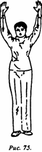
_____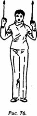
Выполняется на основе первого упражнения, пальцы рук сцеплены на нижней части живота, их разделяют и поднимают до макушки; пальцы растопырены, ладони обращены вперед и вверх, руки находятся друг от друга на расстоянии плеч; при счете "раз" делаются движения, как при сборе фруктов; ладони с силой сжимаются и равномерно опускаются до уровня плеч, внутренняя часть обращена вперед; одновременно делается вдох. На счет "два" оба кулака поднимаются вверх, достигая наивысшей точки; одновременно делается выдох. Упражнение выполняется в 4 подхода по 8 счетов.
Важные моменты: руки поднимаются вверх естественно (без принуждения), когда же тянут вниз "собранные фрукты", то прилагают усилие; при поднимании и опускании рук голову держат прямо, не задирая кверху.
"Поднимание кулаков с обеих сторон" (рис. 77, 78).
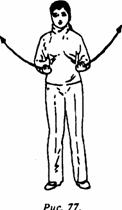
_____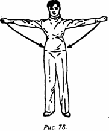
Выполняется на основе второго упражнения. Обе руки, сжатые в кулаки, расположены по обеим сторонам поясницы, при этом внутренняя сторона кулаков повернута вверх, пространство между большим и указательным пальцами обращено наружу. Про себя делается счет "раз", внутренняя сторона кулаков разворачивается к телу, руки разводятся в стороны на высоту плеч, внутренняя сторона кулаков обращается к земле; одновременно делается вдох. На счет "два" кулаки возвращаются в исходную позицию; одновременно делается выдох. Упражнение выполняется в 4 подхода по 8 счетов.
Важные моменты: поднимать кулаки надо с силой; при разведении и сведении кулаков надо иметь в виду, что их внутренняя сторона все время меняет свою ориентацию. При разведении рук внутренняя сторона обращена вниз, при возвращении в исходную позицию - поворачивается вверх.
"Обхватив руками голову, делать наклоны в стороны" (рис. 79-81).
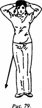
__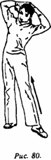
__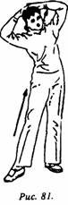
Выполняется на основе третьего упражнения, пальцы рук сцеплены, ладони лежат на затылке; про себя делается счет "раз", поясница выгибается вправо и, таким образом, производится наклон влево; одновременно делается вдох. На счет "два" корпус возвращается в исходную позицию; одновременно делается выдох. На счет "три" корпус выгибается влево и сгибается вправо; делается вдох. На счет "четыре" корпус возвращается в исходную позицию; одновременно делается выдох. Упражнение выполняется на 4 счета.
Важные моменты: при выполнении движений следить за тем, чтобы сгибалась только поясничная часть, остальные части тела следуют за данным движением. Ноги в коленях все время выпрямлены. При наклонах влево и вправо движения делать до упора.
"Наклоняться вперед, запрокидываться назад" (рис. 82, 83).
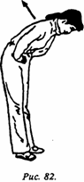
_____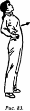
Выполняется на основе четвертого упражнения; руки, сцепленные на затылке, переместить на поясницу, обхватить ее. Про себя произносится счет "раз", делается наклон в пояснице вперед; при достижении верхней частью туловища горизонтального положения одновременно делается вдох. На счет "два" делается движение с разгибания верхней части тела и запрокидывания назад, при этом тазобедренная часть максимально выдвигается вперед; одновременно делается выдох. Упражнение выполняется на 4 счета.
Важные моменты: при сгибании вперед и разгибании назад двигается только верхняя часть корпуса, остальные части тела выполняют соответствующие движения; при выполнении упражнения ноги сохраняют выпрямленное положение.
"Удары кулаками в стойке всадника" (рис. 84).
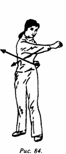
Выполняется на основе пятого упражнения, принимается "стойка всадника", сжатые кулаки обеих рук покоятся на пояснице, обращенные внутренней стороной вверх, пространство между большим и указательным пальцами смотрит наружу. Про себя делается счет "раз", кулак правой руки, поворачиваясь, с силой наносит удар вперед, при этом ладонь обращается вниз; удар выполняется до полного распрямления руки в локте; верхняя часть корпуса неподвижна; глаза следуют за кулаками; одновременно делается вдох. На счет "два" правый кулак возвращается в исходное положение, при этом делается выдох. На счет "три" левая рука делает выпад вперед с усилием, при этом кулак поворачивается внутренней стороной вниз; выпад вперед делается до полного распрямления руки в локте. Верхняя часть корпуса неподвижна; глаза следуют за кулаками; одновременно делается вдох. На счет "четыре" кулак возвращается в исходную позицию; одновременно делается выдох. Упражнение выполняется на 4 счета.
Важные моменты: удары наносятся с силой, а возвращение в исходную позицию происходит спокойно; верхняя часть корпуса и ноги остаются неподвижными.
"Полуприседания с полуподъемом рук вверх" (рис. 85, 86).
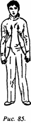
_____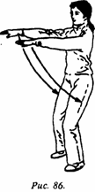
Выполняется на основе шестого упражнения, стойка естественная, руки спокойно опущены вниз, ладони обращены вовнутрь. На счет "раз" (про себя) обе ноги слегка сгибаются в коленях так, чтобы проекция коленной чашечки не выходила за носки. При этом обе руки синхронно поднимаются на уровень груди, ладони обращены вниз; одновременно делается вдох. На счет "два" принимается исходная позиция; одновременно делается выдох. Упражнение выполняется на 4 счета.
Важные моменты: необходимо одновременно делать приседание и подъем рук, следить за тем, чтобы движения были согласованы; больным, людям с ослабленным здоровьем и в преклонном возрасте можно делать неглубокое приседание.
"Руки опираются на вращающиеся колени" (рис. 87, 88).
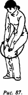
_____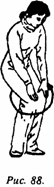
Выполняется на основе седьмой позиции. Обе ноги прижимаются друг к другу, верхняя часть корпуса наклоняется вперед, ноги в коленях слегка согнуты; ладони по отдельности прижаты к коленям. Про себя делается счет "раз", оба коленных сустава начинают выполнять вращательные движения назад и вправо, затем в левую заднюю позицию; одновременно делается вдох. На счет "два" колени из задней левой позиции двигаются в переднюю левую позицию, затем в переднюю правую, затем в заднюю правую позицию (т.е. выполняется круговое движение прижатыми друг к другу коленями по часовой стрелке); одновременно делается выдох. Выполняется 2 раза. Затем выполняются круговые движения прижатыми друг к другу коленями в противоположном направлении, т.е. из правой передней позиции - в левую переднюю, при этом делают вдох. После чего колени двигаются в левую заднюю позицию, оттуда в правую заднюю, одновременно делается выдох. Также выполняется на 2 счета.
Важные моменты: вращение коленей должно выполняться по кругу; главным является движение коленей, движения остальных частей тела носят вспомогательный характер.
"Махи ногами влево и вправо" (рис. 89, 90).
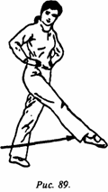
_____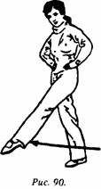
Выполняется на основе восьмого упражнения. Принимается естественная стойка, руки на пояснице, пространство между большим и указательным пальцами обращено вовнутрь. Про себя делается счет "раз", правая нога приподнимается влево и вверх, как бы нанося удар; носок оттянут; одновременно делается вдох. На счет "два" правая нога возвращается в исходную позицию. На счет "три" левая нога делает "удар" вправо и вверх, носок оттягивается; одновременно делается выдох. На счет "четыре" нога возвращается в исходную позицию, при этом делается выдох. Упражнение выполняется 4 раза.
Важные моменты: при махах ног с максимальным усилием выполняется движение вверх. При махах не следует наклонять верхнюю часть корпуса вперед.
"Волны движутся вперед" (рис. 91, 92).
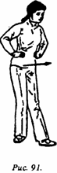
_____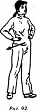
Выполняется на основе девятого упражнения; руки по-прежнему лежат на пояснице, левая нога делает полшага вперед и влево; про себя делается счет "раз"; корпус подается вперед. Центр тяжести тела переносится на левый носок; тазобедренный сустав перемещается влево и вперед; пятка стоящей сзади ноги отрывается от земли; одновременно делается вдох. На счет "два" корпус перемещается назад вправо, центр тяжести переносится на пятку; носок левой ноги отрывается от земли; одновременно делается выдох. Выполняется 2 раза. На счет "три" правая нога делает полушаг вперед; упражнение выполняется 2 раза.
Важные моменты: при перемещении вперед и назад центра тяжести движение тела напоминает движение морских волн, при этом должен быть такой ритм движений, чтобы ощущать комфорт; движения должны быть скоординированными и плавными.
300 вопросов о цигун. Секреты китайской медицины. Содержание